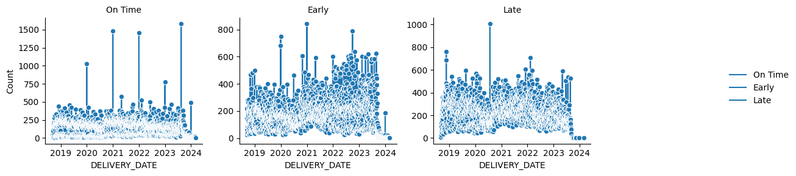
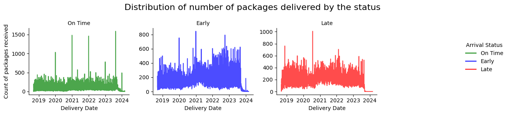
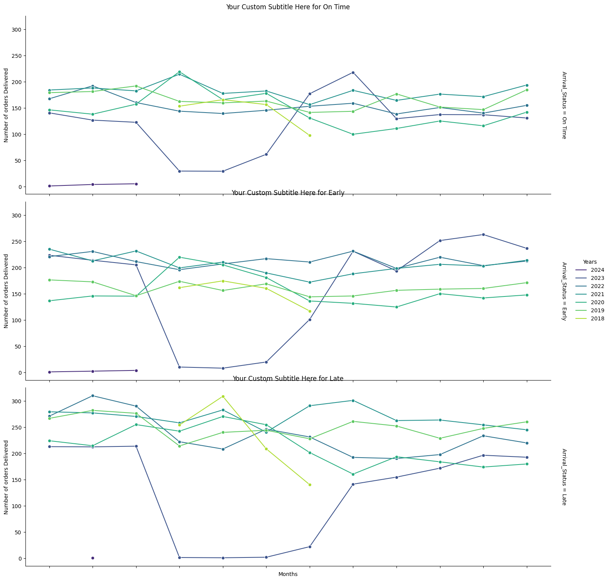
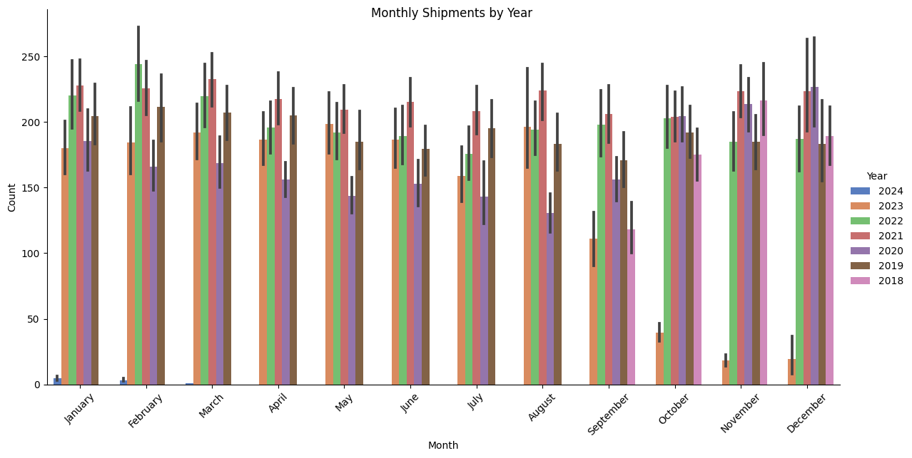
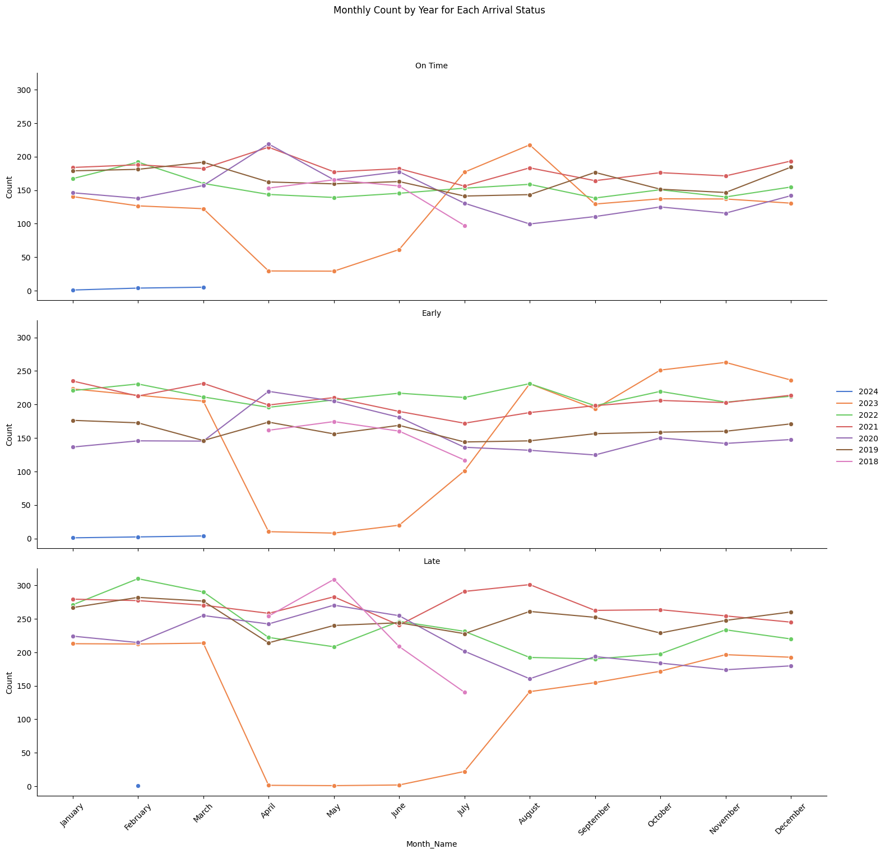
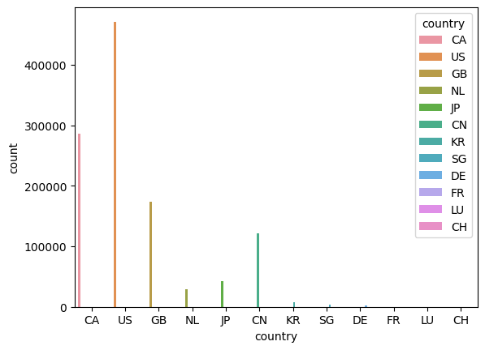
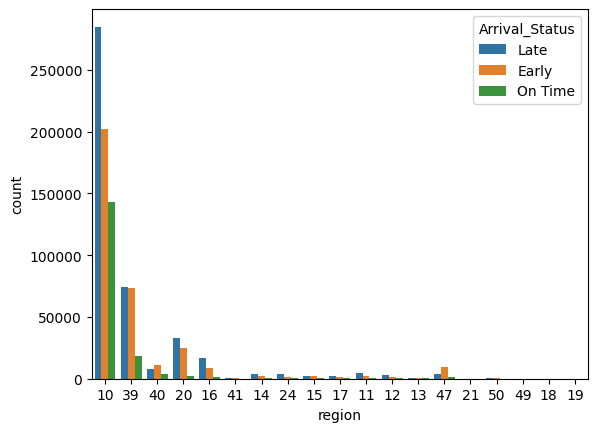
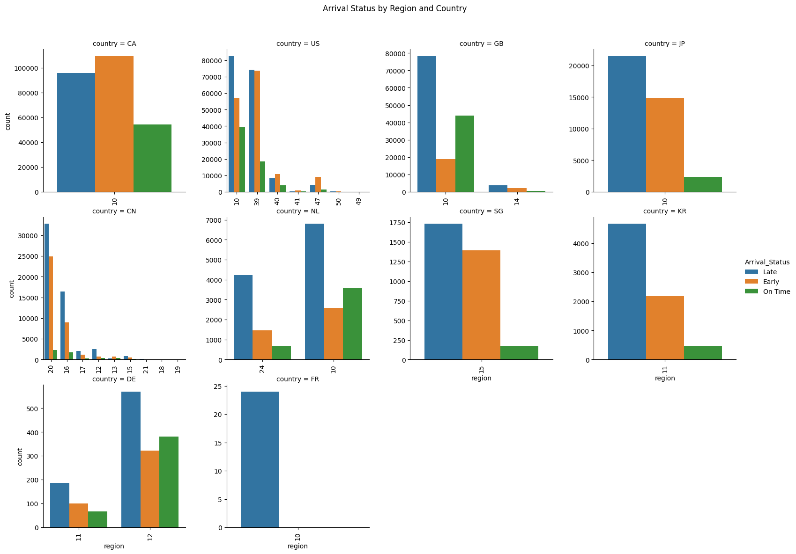
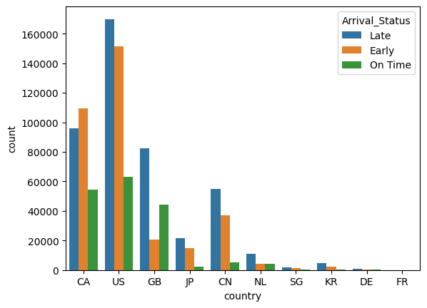

# Snowpark for Python
from snowflake.snowpark import Session
from snowflake.snowpark.version import VERSION
from snowflake.snowpark.types import StructType, StructField, DoubleType, StringType
import snowflake.snowpark.functions as F
# data science libs
import numpy as np
# misc
import json1. Data Ingestion
1. Data Ingestion
The diamonds dataset has been widely used in data science and machine learning. We will use it to demonstrate Snowflake’s native data science transformers in terms of database functionality and Spark & Pandas comportablity, using non-synthetic and statistically appropriate data that is well known to the ML community.
Establish Secure Connection to Snowflake
Other connection options include Username/Password, MFA, OAuth, Okta, SSO. For more information, refer to the Python Connector documentation.
Import Libraries
import pandas as pd# Make a Snowpark Connection
################################################################################################################
# You can also use the SnowSQL Client to configure your connection params:
# https://docs.snowflake.com/en/user-guide/snowsql-install-config.html
#
# >>> from snowflake.ml.utils import connection_params
# >>> session = Session.builder.configs(connection_params.SnowflakeLoginOptions()
# >>> ).create()
#
# NOTE: If you have named connection params then specify the connection name
# Example:
#
# >>> session = Session.builder.configs(
# >>> connection_params.SnowflakeLoginOptions(connection_name='connections.snowml')
# >>> ).create()
#
#################################################################################################################
# Edit the connection.json before creating the session object below
# Create Snowflake Session object
connection_parameters = json.load(open('connection.json'))
session = Session.builder.configs(connection_parameters).create()
session.sql_simplifier_enabled = True
snowflake_environment = session.sql('SELECT current_user(), current_version()').collect()
snowpark_version = VERSION
# Current Environment Details
print('\nConnection Established with the following parameters:')
print('User : {}'.format(snowflake_environment[0][0]))
print('Role : {}'.format(session.get_current_role()))
print('Database : {}'.format(session.get_current_database()))
print('Schema : {}'.format(session.get_current_schema()))
print('Warehouse : {}'.format(session.get_current_warehouse()))
print('Snowflake version : {}'.format(snowflake_environment[0][1]))
print('Snowpark for Python version : {}.{}.{}'.format(snowpark_version[0],snowpark_version[1],snowpark_version[2]))
Connection Established with the following parameters:
User : LION
Role : "TRAINING_ROLE"
Database : "HACKATHON_ALGORITHM_AVENGERS"
Schema : "PROCUREMENT_ON_TIME_DELIVERY"
Warehouse : "U"
Snowflake version : 8.9.1
Snowpark for Python version : 1.13.0# Show the file before loading
session.sql("DESCRIBE TABLE PROCUREMENT_ON_TIME_DELIVERY.PURCHASE_ORDER_HISTORY;").show()
df = session.read.options({"field_delimiter": ",",
"field_optionally_enclosed_by": '"',
"infer_schema": True,
"parse_header": True}).table("PROCUREMENT_ON_TIME_DELIVERY.PURCHASE_ORDER_HISTORY")
# Select only three columns from the DataFrame
#selected_df = df.select("PURCHASE_DOCUMENT_ID", "CREATE_DATE", "COMPANY_CODE_ID")
# Show the selected columns
#selected_df.show()
koch = df.to_pandas()---------------------------------------------------------------------------------------------------------------------------------------------------------------------------------------
|"name" |"type" |"kind" |"null?" |"default" |"primary key" |"unique key" |"check" |"expression" |"comment" |"policy name" |"privacy domain" |
---------------------------------------------------------------------------------------------------------------------------------------------------------------------------------------
|PURCHASE_DOCUMENT_ID |NUMBER(38,0) |COLUMN |Y |NULL |N |N |NULL |NULL |NULL |NULL |NULL |
|CREATE_DATE |NUMBER(38,0) |COLUMN |Y |NULL |N |N |NULL |NULL |NULL |NULL |NULL |
|COMPANY_CODE_ID |VARCHAR(16777216) |COLUMN |Y |NULL |N |N |NULL |NULL |NULL |NULL |NULL |
|VENDOR_ID |VARCHAR(16777216) |COLUMN |Y |NULL |N |N |NULL |NULL |NULL |NULL |NULL |
|POSTAL_CD |VARCHAR(16777216) |COLUMN |Y |NULL |N |N |NULL |NULL |NULL |NULL |NULL |
|RELEASE_DATE |NUMBER(38,0) |COLUMN |Y |NULL |N |N |NULL |NULL |NULL |NULL |NULL |
|PURCHASE_DOCUMENT_ITEM_ID |NUMBER(38,0) |COLUMN |Y |NULL |N |N |NULL |NULL |NULL |NULL |NULL |
|MATERIAL_ID |NUMBER(38,0) |COLUMN |Y |NULL |N |N |NULL |NULL |NULL |NULL |NULL |
|SUB_COMMODITY_DESC |VARCHAR(16777216) |COLUMN |Y |NULL |N |N |NULL |NULL |NULL |NULL |NULL |
|MRP_TYPE_ID |NUMBER(38,0) |COLUMN |Y |NULL |N |N |NULL |NULL |NULL |NULL |NULL |
---------------------------------------------------------------------------------------------------------------------------------------------------------------------------------------
koch.to_csv("koch.csv")import pandas as pd
import numpy as np
date_columns = ['POR_DELIVERY_DATE', 'DELIVERY_DATE', 'REQUESTED_DELIVERY_DATE', 'FIRST_GR_POSTING_DATE','CREATE_DATE']
for column in date_columns:
temp_series = koch[column].fillna(0).astype(int).astype(str)
# Replace '0' string back to NaN to avoid incorrect date conversion
temp_series = temp_series.replace('0', np.nan)
# Convert to datetime
koch[column] = pd.to_datetime(temp_series, format='%Y%m%d', errors='coerce')
#Creating target column
koch['Time_Difference'] = koch['FIRST_GR_POSTING_DATE'] - koch['DELIVERY_DATE']
koch['Time_Difference'] = koch['Time_Difference'].dt.days
fallback_diff = (koch['REQUESTED_DELIVERY_DATE'] - koch['DELIVERY_DATE']).dt.days
# Fill in Time_Difference where it's NaN with the fallback difference
koch['Time_Difference'] = np.where(koch['Time_Difference'].isna(), fallback_diff, koch['Time_Difference'])
def determine_status(days):
if days < 0:
return 'Early'
elif days == 0:
return 'On Time'
else:
return 'Late'
# Assuming 'Time_Difference' is your column with the date difference in days
koch['Arrival_Status'] = koch['Time_Difference'].apply(determine_status)
rows = [22641, 115701, 358807, 484118, 489462, 524500, 524553, 524570,
524667, 524670, 524698, 592204, 614500, 745948, 947446]
# Drop rows based on indices
koch = koch.drop(rows)
koch['country'] = koch['COMPANY_CODE_ID'].str.slice(0, 2)
koch['region'] = koch['COMPANY_CODE_ID'].str.slice(2, 4)
koch = koch[koch['DELIVERY_DATE'] >= koch['CREATE_DATE']]
from datetime import datetime, timedelta
# Get tomorrow's date for comparison
tomorrow = datetime.today().date() + timedelta(days=1)
# Filter rows where 'DELIVERY_DATE' is tomorrow or in the future
koch = koch[koch['DELIVERY_DATE'].dt.date <= tomorrow]
def determine_status(days):
if days < 0:
return 'Early'
elif days == 0:
return 'On Time'
else:
return 'Late'
# Assuming 'Time_Difference' is your column with the date difference in days
koch['Arrival_Status'] = koch['Time_Difference'].apply(determine_status)rows = [22641, 115701, 358807, 484118, 489462, 524500, 524553, 524570,
524667, 524670, 524698, 592204, 614500, 745948, 947446]
# Drop rows based on indices
koch = koch.drop(rows)koch['country'] = koch['COMPANY_CODE_ID'].str.slice(0, 2)
koch['region'] = koch['COMPANY_CODE_ID'].str.slice(2, 4)koch.shape(1139392, 25)koch = koch[koch['DELIVERY_DATE'] >= koch['CREATE_DATE']]
from datetime import datetime, timedelta
# Get tomorrow's date for comparison
tomorrow = datetime.today().date() + timedelta(days=1)
# Filter rows where 'DELIVERY_DATE' is tomorrow or in the future
koch = koch[koch['DELIVERY_DATE'].dt.date <= tomorrow]weiurdkoch[koch['DELIVERY_DATE'] >= koch['CREATE_DATE']]graph1 = koch.groupby(['DELIVERY_DATE', 'Arrival_Status']).size().reset_index(name='Count')
# Sort the resulting DataFrame by 'DELIVERY_DATE'
graph1 = graph1.sort_values(by='DELIVERY_DATE', ascending=False)
import seaborn as sns
import matplotlib.pyplot as plt
# Assuming 'graph1' is your DataFrame
# Create a FacetGrid with 'ARRIVAL_STATUS' for creating separate subplots for each unique value in 'ARRIVAL_STATUS'
graph_1 = sns.FacetGrid(graph1, col="Arrival_Status", col_wrap=4, sharex=False, sharey=False) # Adjust 'col_wrap' as needed
# Map a lineplot onto each subplot by specifying the x and y axis and the 'hue' for coloring different 'Arrival_Status' within each subplot
graph_1.map(sns.lineplot, "DELIVERY_DATE", "Count", "Arrival_Status", marker="o")
# Adding a legend and adjusting subplot titles
graph_1.add_legend()
graph_1.set_titles("{col_name}")
# Optionally, adjust the layout so plots don't overlap
plt.tight_layout()
# Show the plot
plt.show()graph1 = koch.groupby(['DELIVERY_DATE', 'Arrival_Status']).size().reset_index(name='Count')
# Sort the resulting DataFrame by 'DELIVERY_DATE'
graph1 = graph1.sort_values(by='DELIVERY_DATE', ascending=False)
graph1| DELIVERY_DATE | Arrival_Status | Count | |
|---|---|---|---|
| 5821 | 2024-03-03 | On Time | 1 |
| 5820 | 2024-03-02 | Early | 1 |
| 5819 | 2024-03-01 | On Time | 1 |
| 5818 | 2024-02-29 | On Time | 24 |
| 5817 | 2024-02-29 | Early | 1 |
| ... | ... | ... | ... |
| 5 | 2018-09-09 | On Time | 1 |
| 2 | 2018-09-08 | Late | 120 |
| 3 | 2018-09-08 | On Time | 2 |
| 1 | 2018-09-07 | On Time | 34 |
| 0 | 2018-09-07 | Late | 8 |
5822 rows × 3 columns
original_count = len(koch)
weird_dates_df = koch[koch['DELIVERY_DATE'] > koch['CREATE_DATE']]
filtered_count = len(weird_dates_df)
# Calculate the number of dropped rows
dropped_count = original_count - filtered_count
print(f"Number of rows dropped: {dropped_count}")
Number of rows dropped: 90962
original_count = len(koch)
# Get tomorrow's date for comparison
tomorrow = datetime.today().date() + timedelta(days=1)
# Filter rows where 'DELIVERY_DATE' is tomorrow or in the future
more_weird = koch[koch['DELIVERY_DATE'].dt.date <= tomorrow]
# Get the count of the filtered rows
more_weird_count = len(more_weird)
# Calculate the number of rows dropped
dropped_count_2 = original_count - more_weird_count
print(f"Number of rows dropped: {dropped_count_2}")Number of rows dropped: 0# Group by 'DELIVERY_DATE' and 'Arrival_Status', and count the occurrences
graph_data = koch.groupby(['DELIVERY_DATE', 'Arrival_Status']).size().reset_index(name='Count')
# Sort the resulting DataFrame by 'DELIVERY_DATE'
graph_data = graph_data.sort_values(by='DELIVERY_DATE')
graph_data| DELIVERY_DATE | Arrival_Status | Count | |
|---|---|---|---|
| 0 | 2018-09-07 | Late | 8 |
| 1 | 2018-09-07 | On Time | 34 |
| 2 | 2018-09-08 | Late | 120 |
| 3 | 2018-09-08 | On Time | 2 |
| 4 | 2018-09-09 | Late | 6 |
| ... | ... | ... | ... |
| 5818 | 2024-02-29 | On Time | 24 |
| 5817 | 2024-02-29 | Early | 1 |
| 5819 | 2024-03-01 | On Time | 1 |
| 5820 | 2024-03-02 | Early | 1 |
| 5821 | 2024-03-03 | On Time | 1 |
5822 rows × 3 columns
import seaborn as sns
import matplotlib.pyplot as plt
# Assuming 'graph1' is your DataFrame
# Create a FacetGrid with 'ARRIVAL_STATUS' for creating separate subplots for each unique value in 'ARRIVAL_STATUS'
graph_1 = sns.FacetGrid(graph1, col="Arrival_Status", col_wrap=4, sharex=False, sharey=False) # Adjust 'col_wrap' as needed
# Map a lineplot onto each subplot by specifying the x and y axis and the 'hue' for coloring different 'Arrival_Status' within each subplot
graph_1.map(sns.lineplot, "DELIVERY_DATE", "Count", "Arrival_Status", marker="o")
# Adding a legend and adjusting subplot titles
graph_1.add_legend()
graph_1.set_titles("{col_name}")
# Optionally, adjust the layout so plots don't overlap
plt.tight_layout()
# Show the plot
plt.show()
import seaborn as sns
import matplotlib.pyplot as plt
# Define your custom color palette for each 'Arrival_Status'
color_palette = {
"On Time": "green", # Ensure this matches exactly with your DataFrame's 'Arrival_Status' values
"Late": "red",
"Early": "blue" # Corrected 'golden' to 'gold', which is a valid color name
}
# Create a FacetGrid
g = sns.FacetGrid(graph1, col="Arrival_Status", col_wrap=4, sharex=False, sharey=False)
# Use map_dataframe to apply sns.lineplot
g.map_dataframe(sns.lineplot, x="DELIVERY_DATE", y="Count", hue="Arrival_Status", palette=color_palette, alpha =.7)
# Add a legend and adjust subplot titles
g.add_legend(title="Arrival Status")
g.set_titles("{col_name}")
# Set custom axis labels
g.set_axis_labels("Delivery Date", "Count of packages received")
# Set the overall title for the figure
g.fig.suptitle('Distribution of number of packages delivered by the status', fontsize=16)
# Optionally, adjust the layout
plt.tight_layout()
# Show the plot
plt.show()
import pandas as pd
# Ensure that 'CREATE_DATE' is a datetime column
koch['CREATE_DATE'] = pd.to_datetime(koch['CREATE_DATE'])
# Extract the year from 'CREATE_DATE'
koch['Year'] = koch['CREATE_DATE'].dt.year
# Calculate the average 'Time_Difference' per 'MATERIAL_ID' and 'Year'
material_delays = koch.groupby(['MATERIAL_ID', 'Year'])['Time_Difference'].mean().reset_index()
# Get top 5 materials with the highest average delay per year
top_materials = material_delays.sort_values('Time_Difference', ascending=False).groupby('Year').head(5)
# Get bottom 5 materials with the lowest average delay per year
bottom_materials = material_delays.sort_values('Time_Difference', ascending=True).groupby('Year').head(5)top_materials.head(5)| MATERIAL_ID | Year | Time_Difference | |
|---|---|---|---|
| 61623 | 2.100009e+09 | 2018 | 1627.0 |
| 63904 | 2.100031e+09 | 2019 | 1489.0 |
| 60666 | 2.100008e+09 | 2019 | 1321.0 |
| 60088 | 2.100008e+09 | 2020 | 1175.5 |
| 61849 | 2.100009e+09 | 2020 | 1066.0 |
bottom_materials.head(5)| MATERIAL_ID | Year | Time_Difference | |
|---|---|---|---|
| 44804 | 1.100261e+09 | 2021 | -585.0 |
| 54072 | 1.100275e+09 | 2022 | -516.0 |
| 54045 | 1.100275e+09 | 2022 | -516.0 |
| 41686 | 1.100255e+09 | 2022 | -488.0 |
| 41357 | 1.100254e+09 | 2018 | -480.5 |
# Convert 'Delivery_Date' to datetime if it's not already
graph2 = graph1
# Extract month name and year from 'Delivery_Date'
graph2['Month'] = graph2['DELIVERY_DATE2'].dt.month_name()
graph2['Year'] = graph2['DELIVERY_DATE2'].dt.year.astype(str) # Convert year to string for categorical plotting
graph2| DELIVERY_DATE | Arrival_Status | Count | DELIVERY_DATE2 | Month | Year | Month_Name | |
|---|---|---|---|---|---|---|---|
| 5821 | 2024-03-03 | On Time | 1 | 2024-03-03 | March | 2024 | March |
| 5820 | 2024-03-02 | Early | 1 | 2024-03-02 | March | 2024 | March |
| 5819 | 2024-03-01 | On Time | 1 | 2024-03-01 | March | 2024 | March |
| 5818 | 2024-02-29 | On Time | 24 | 2024-02-29 | February | 2024 | February |
| 5817 | 2024-02-29 | Early | 1 | 2024-02-29 | February | 2024 | February |
| ... | ... | ... | ... | ... | ... | ... | ... |
| 5 | 2018-09-09 | On Time | 1 | 2018-09-09 | September | 2018 | September |
| 2 | 2018-09-08 | Late | 120 | 2018-09-08 | September | 2018 | September |
| 3 | 2018-09-08 | On Time | 2 | 2018-09-08 | September | 2018 | September |
| 1 | 2018-09-07 | On Time | 34 | 2018-09-07 | September | 2018 | September |
| 0 | 2018-09-07 | Late | 8 | 2018-09-07 | September | 2018 | September |
5822 rows × 7 columns
# Assuming 'df' is your DataFrame
# Create a FacetGrid, with rows for each 'Arrival_Status'
g = sns.FacetGrid(graph2, row='Arrival_Status', height=5, aspect=3, margin_titles=True)
# Map the data to lineplots
g.map(sns.lineplot, 'Month_Name', 'Count', 'Year', marker="o", palette='viridis', ci=None)
g.set_axis_labels('Months', 'Number of orders Delivered')
g.set_titles('{row_name}')
g.add_legend(title='Years')
g.set_xticklabels(rotation=45)
for ax, status in zip(g.axes.flatten(), graph2['Arrival_Status'].unique()):
ax.set_title(f'Your Custom Subtitle Here for {status}', y=1.02) # You can adjust the y value as needed
# Show plot
plt.show()
# Show plot
plt.show()
C:\Users\Dann_\AppData\Local\Packages\PythonSoftwareFoundation.Python.3.10_qbz5n2kfra8p0\LocalCache\local-packages\Python310\site-packages\seaborn\axisgrid.py:848: FutureWarning:
The `ci` parameter is deprecated. Use `errorbar=None` for the same effect.
func(*plot_args, **plot_kwargs)
C:\Users\Dann_\AppData\Local\Packages\PythonSoftwareFoundation.Python.3.10_qbz5n2kfra8p0\LocalCache\local-packages\Python310\site-packages\seaborn\axisgrid.py:848: FutureWarning:
The `ci` parameter is deprecated. Use `errorbar=None` for the same effect.
func(*plot_args, **plot_kwargs)
C:\Users\Dann_\AppData\Local\Packages\PythonSoftwareFoundation.Python.3.10_qbz5n2kfra8p0\LocalCache\local-packages\Python310\site-packages\seaborn\axisgrid.py:848: FutureWarning:
The `ci` parameter is deprecated. Use `errorbar=None` for the same effect.
func(*plot_args, **plot_kwargs)
import seaborn as sns
import matplotlib.pyplot as plt
# Create the main graph
plt.figure(figsize=(12, 6))
g = sns.catplot(x='Month', y='Count', hue='Year', data=graph1, kind='bar', height=6, aspect=2, palette='muted', order=['January', 'February', 'March', 'April', 'May', 'June', 'July', 'August', 'September', 'October', 'November', 'December'])
g.set_axis_labels("Month", "Count")
g.fig.suptitle('Monthly Shipments by Year')
# Rotate x-axis labels for readability if needed
plt.xticks(rotation=45)
# Show plot
plt.show()<Figure size 1200x600 with 0 Axes>
import pandas as pd
# Assuming 'Delivery_Date' is in datetime format. If not, convert it first:
# graph1['Delivery_Date'] = pd.to_datetime(graph1['Delivery_Date'])
# Extract month and year from 'Delivery_Date'
graph2['Month'] = graph2['DELIVERY_DATE'].dt.month
graph1['Year'] = graph1['DELIVERY_DATE'].dt.year
# Optionally, convert 'Month' from numbers to names for better readability in the plots
graph1['Month_Name'] = graph1['DELIVERY_DATE'].dt.strftime('%B')# Create mini multiple plots
g = sns.FacetGrid(graph2, col="Arrival_Status", col_wrap=1, height=5, aspect=3, margin_titles=True)
g.map_dataframe(sns.lineplot, x='Month_Name', y='Count', hue='Year', palette='muted', marker='o', ci=None)
# Adjust the mini plots
g.set_xticklabels(rotation=45) # Rotate x-axis labels for readability
g.add_legend() # Add legend
g.set_titles("{col_name}") # Set title for each subplot
g.fig.subplots_adjust(top=0.9)
g.fig.suptitle('Monthly Count by Year for Each Arrival Status')
order = ['January', 'February', 'March', 'April', 'May', 'June', 'July', 'August', 'September', 'October', 'November', 'December']
plt.xticks(range(len(order)), order, rotation=45)
# Show the plot
plt.show()C:\Users\Dann_\AppData\Local\Packages\PythonSoftwareFoundation.Python.3.10_qbz5n2kfra8p0\LocalCache\local-packages\Python310\site-packages\seaborn\axisgrid.py:848: FutureWarning:
The `ci` parameter is deprecated. Use `errorbar=None` for the same effect.
func(*plot_args, **plot_kwargs)
C:\Users\Dann_\AppData\Local\Packages\PythonSoftwareFoundation.Python.3.10_qbz5n2kfra8p0\LocalCache\local-packages\Python310\site-packages\seaborn\axisgrid.py:848: FutureWarning:
The `ci` parameter is deprecated. Use `errorbar=None` for the same effect.
func(*plot_args, **plot_kwargs)
C:\Users\Dann_\AppData\Local\Packages\PythonSoftwareFoundation.Python.3.10_qbz5n2kfra8p0\LocalCache\local-packages\Python310\site-packages\seaborn\axisgrid.py:848: FutureWarning:
The `ci` parameter is deprecated. Use `errorbar=None` for the same effect.
func(*plot_args, **plot_kwargs)
koch_1.shape(180306, 23)koch_2 = koch[koch['DELIVERY_DATE'].isna()]koch_2.shape(45636, 23)# Filter rows where both 'FIRST_GR_POSTING_DATE' and 'SECOND_COLUMN' are null
koch_3 = koch[koch['FIRST_GR_POSTING_DATE'].isna() & koch['DELIVERY_DATE'].isna()]### THIS WE DON'T KNOW
# Attempt to convert 'PLANNED_DELIVERY_DAYS' to numeric, forcing non-convertible values to NaN
koch_3['PLANNED_DELIVERY_DAYS_numeric'] = pd.to_numeric(koch_3['PLANNED_DELIVERY_DAYS'], errors='coerce')
rows = [ 22641, 115701, 358807, 484118, 489462, 524500, 524553, 524570,
524667, 524670, 524698, 592204, 614500, 745948, 947446]
filtered_rows = koch_3.query("index in @rows")
C:\Users\Dann_\AppData\Local\Temp\ipykernel_31276\2660678657.py:4: SettingWithCopyWarning:
A value is trying to be set on a copy of a slice from a DataFrame.
Try using .loc[row_indexer,col_indexer] = value instead
See the caveats in the documentation: https://pandas.pydata.org/pandas-docs/stable/user_guide/indexing.html#returning-a-view-versus-a-copy
koch_3['PLANNED_DELIVERY_DAYS_numeric'] = pd.to_numeric(koch_3['PLANNED_DELIVERY_DAYS'], errors='coerce')rows = [22641, 115701, 358807, 484118, 489462, 524500, 524553, 524570,
524667, 524670, 524698, 592204, 614500, 745948, 947446]
# Drop rows based on indices
koch = koch.drop(rows)
sns.countplot(koch, x="country", hue="country")
import seaborn as sns
import matplotlib.pyplot as plt
koch = koch.dropna(subset=['Time_Difference'])
sns.countplot(koch, x="region", hue="Arrival_Status")
koch.shape(959086, 25)# Load your dataset
data = koch[['country', 'region', 'Arrival_Status']]
# Use catplot to create a count plot on 'region' with hue 'Arrival_Status', facetted by 'country'
g = sns.catplot(data=data, kind='count', x='region', hue='Arrival_Status', col='country', col_wrap=4, height=4, aspect=1, sharex=False, sharey=False)
# Rotate x-axis labels for readability if needed
g.set_xticklabels(rotation=90)
# Adjust spacing and layout
g.fig.subplots_adjust(top=0.9) # adjust the Figure in g
g.fig.suptitle('Arrival Status by Region and Country')
# Show plot
g.fig.show()C:\Users\Dann_\AppData\Local\Temp\ipykernel_31276\911448519.py:15: UserWarning: Matplotlib is currently using module://matplotlib_inline.backend_inline, which is a non-GUI backend, so cannot show the figure.
g.fig.show()
koch.shape(959086, 25)koch.isna().sum()PURCHASE_DOCUMENT_ID 0
CREATE_DATE 0
COMPANY_CODE_ID 0
VENDOR_ID 182957
POSTAL_CD 183927
RELEASE_DATE 945562
PURCHASE_DOCUMENT_ITEM_ID 0
MATERIAL_ID 437382
SUB_COMMODITY_DESC 190
MRP_TYPE_ID 437382
MRP_TYPE_DESC_E 437382
SHORT_TEXT 2
PLANT_ID 4
POR_DELIVERY_DATE 636604
FIRST_GR_POSTING_DATE 0
DELIVERY_DATE 0
REQUESTED_DELIVERY_DATE 31
INBOUND_DELIVERY_ID 501397
INBOUND_DELIVERY_ITEM_ID 0
PLANNED_DELIVERY_DAYS 0
BI_LAST_UPDATED_PURCHASE_DOCUMENT_ITEM 4
Time_Difference 0
Arrival_Status 0
country 0
region 0
dtype: int64import seaborn as sns
sns.countplot(koch, x='country', hue="Arrival_Status")
koch.corr()C:\Users\Dann_\AppData\Local\Temp\ipykernel_31276\3775191888.py:1: FutureWarning: The default value of numeric_only in DataFrame.corr is deprecated. In a future version, it will default to False. Select only valid columns or specify the value of numeric_only to silence this warning.
koch.corr()| PURCHASE_DOCUMENT_ID | CREATE_DATE | RELEASE_DATE | PURCHASE_DOCUMENT_ITEM_ID | MATERIAL_ID | MRP_TYPE_ID | MRP_TYPE_DESC_E | PLANT_ID | INBOUND_DELIVERY_ID | INBOUND_DELIVERY_ITEM_ID | Time_Difference | |
|---|---|---|---|---|---|---|---|---|---|---|---|
| PURCHASE_DOCUMENT_ID | 1.000000 | -0.447598 | 0.973145 | -0.067820 | -0.026805 | -0.089837 | -0.089837 | -0.116759 | 0.067220 | 0.137625 | 0.013045 |
| CREATE_DATE | -0.447598 | 1.000000 | 0.978268 | 0.019132 | -0.151960 | 0.057505 | 0.057505 | 0.126165 | 0.862824 | -0.037265 | -0.003790 |
| RELEASE_DATE | 0.973145 | 0.978268 | 1.000000 | 0.058318 | -0.428607 | 0.129329 | 0.129329 | 0.390877 | 0.978144 | 0.015586 | -0.039788 |
| PURCHASE_DOCUMENT_ITEM_ID | -0.067820 | 0.019132 | 0.058318 | 1.000000 | -0.047315 | -0.025699 | -0.025699 | 0.065652 | 0.039911 | -0.079710 | 0.007318 |
| MATERIAL_ID | -0.026805 | -0.151960 | -0.428607 | -0.047315 | 1.000000 | 0.053123 | 0.053123 | -0.099694 | -0.108986 | 0.072350 | 0.031020 |
| MRP_TYPE_ID | -0.089837 | 0.057505 | 0.129329 | -0.025699 | 0.053123 | 1.000000 | 1.000000 | -0.089920 | 0.074652 | 0.015430 | 0.003995 |
| MRP_TYPE_DESC_E | -0.089837 | 0.057505 | 0.129329 | -0.025699 | 0.053123 | 1.000000 | 1.000000 | -0.089920 | 0.074652 | 0.015430 | 0.003995 |
| PLANT_ID | -0.116759 | 0.126165 | 0.390877 | 0.065652 | -0.099694 | -0.089920 | -0.089920 | 1.000000 | -0.017856 | -0.125070 | -0.054153 |
| INBOUND_DELIVERY_ID | 0.067220 | 0.862824 | 0.978144 | 0.039911 | -0.108986 | 0.074652 | 0.074652 | -0.017856 | 1.000000 | 0.030787 | 0.035110 |
| INBOUND_DELIVERY_ITEM_ID | 0.137625 | -0.037265 | 0.015586 | -0.079710 | 0.072350 | 0.015430 | 0.015430 | -0.125070 | 0.030787 | 1.000000 | 0.030571 |
| Time_Difference | 0.013045 | -0.003790 | -0.039788 | 0.007318 | 0.031020 | 0.003995 | 0.003995 | -0.054153 | 0.035110 | 0.030571 | 1.000000 |
koch['Time_Difference'].isnull().sum()180321ed = 1139407/(i*100)
ed0.06318770414982171=koch.shape(1139407, 22)koch.shape(1139407, 23)| PURCHASE_DOCUMENT_ID | CREATE_DATE | COMPANY_CODE_ID | VENDOR_ID | POSTAL_CD | RELEASE_DATE | PURCHASE_DOCUMENT_ITEM_ID | MATERIAL_ID | SUB_COMMODITY_DESC | MRP_TYPE_ID | ... | SHORT_TEXT | PLANT_ID | POR_DELIVERY_DATE | FIRST_GR_POSTING_DATE | DELIVERY_DATE | REQUESTED_DELIVERY_DATE | INBOUND_DELIVERY_ID | INBOUND_DELIVERY_ITEM_ID | PLANNED_DELIVERY_DAYS | BI_LAST_UPDATED_PURCHASE_DOCUMENT_ITEM | |
|---|---|---|---|---|---|---|---|---|---|---|---|---|---|---|---|---|---|---|---|---|---|
| 0 | 2000008134 | 20210726 | CA10 | 8010005836 | N2C 0B7 | NaN | 30.0 | NaN | Machinery & Equipment | NaN | ... | 1/2" OD x 0.063" Wall 20' Long ASTM A51 | 4036.0 | NaN | 20210812.0 | 20210806.0 | 20210806.0 | NaN | 0.0 | 0.0 | 2023-05-30 23:07:43.640 |
| 1 | 5100146560 | 20210726 | US10 | None | None | NaN | 130.0 | 2.100008e+09 | Custom Manufacturing | 1.0 | ... | 994 45 9951A TU E 4.99-8.62 3X0X 4014 | 4016.0 | 20210914.0 | 20210914.0 | 20210910.0 | 20210910.0 | 185979544.0 | 10.0 | 3.0 | 2021-11-08 03:52:05.270 |
| 2 | 5501410919 | 20210726 | CA10 | 8010003139 | L6H 5T5 | NaN | 10.0 | NaN | Infrastructure Services | NaN | ... | B66 RECHARGE PORTABLE SAFETY SHOWER 2021 | 4036.0 | NaN | 0.0 | 20210802.0 | 20210802.0 | NaN | 0.0 | 0.0 | 2023-09-07 10:07:29.323 |
| 3 | 2000008138 | 20210726 | CA10 | 8010005836 | N2C 0B7 | NaN | 20.0 | NaN | Piping & Tubing | NaN | ... | 5/8" x 50 ft Black Rubber ProFitter[REG] | 4036.0 | NaN | 20210803.0 | 20210827.0 | 20210827.0 | NaN | 0.0 | 0.0 | 2023-05-30 23:07:43.640 |
| 4 | 2000008136 | 20210726 | CA10 | 8010005836 | N2C 0B7 | NaN | 40.0 | NaN | Material Handling | NaN | ... | 4XL - HI-VIZ SAFETY LONG-SLEEVED SHIRT - | 4036.0 | NaN | 20210730.0 | 20210805.0 | 20210805.0 | NaN | 0.0 | 0.0 | 2023-05-30 23:07:43.640 |
5 rows × 21 columns
Data cleaning
First, let’s force headers to uppercase using Snowpark DataFrame operations for standardization when columns are later written to a Snowflake table.
# Force headers to uppercase
for colname in diamonds_df.columns:
if colname == '"table"':
new_colname = "TABLE_PCT"
else:
new_colname = str.upper(colname)
diamonds_df = diamonds_df.with_column_renamed(colname, new_colname)
diamonds_df.show()----------------------------------------------------------------------------------------------------
|"CARAT" |"CUT" |"COLOR" |"CLARITY" |"DEPTH" |"TABLE_PCT" |"PRICE" |"X" |"Y" |"Z" |
----------------------------------------------------------------------------------------------------
|0.23 |Ideal |E |SI2 |61.5 |55.0 |326 |3.95 |3.98 |2.43 |
|0.21 |Premium |E |SI1 |59.8 |61.0 |326 |3.89 |3.84 |2.31 |
|0.23 |Good |E |VS1 |56.9 |65.0 |327 |4.05 |4.07 |2.31 |
|0.29 |Premium |I |VS2 |62.4 |58.0 |334 |4.20 |4.23 |2.63 |
|0.31 |Good |J |SI2 |63.3 |58.0 |335 |4.34 |4.35 |2.75 |
|0.24 |Very Good |J |VVS2 |62.8 |57.0 |336 |3.94 |3.96 |2.48 |
|0.24 |Very Good |I |VVS1 |62.3 |57.0 |336 |3.95 |3.98 |2.47 |
|0.26 |Very Good |H |SI1 |61.9 |55.0 |337 |4.07 |4.11 |2.53 |
|0.22 |Fair |E |VS2 |65.1 |61.0 |337 |3.87 |3.78 |2.49 |
|0.23 |Very Good |H |VS1 |59.4 |61.0 |338 |4.00 |4.05 |2.39 |
----------------------------------------------------------------------------------------------------
Next, we standardize the category formatting for CUT using Snowpark DataFrame operations.
This way, when we write to a Snowflake table, there will be no inconsistencies in how the Snowpark DataFrame will read in the category names. Secondly, the feature transformations on categoricals will be easier to encode.
def fix_values(columnn):
return F.upper(F.regexp_replace(F.col(columnn), '[^a-zA-Z0-9]+', '_'))
for col in ["CUT"]:
diamonds_df = diamonds_df.with_column(col, fix_values(col))
diamonds_df.show()----------------------------------------------------------------------------------------------------
|"CARAT" |"COLOR" |"CLARITY" |"DEPTH" |"TABLE_PCT" |"PRICE" |"X" |"Y" |"Z" |"CUT" |
----------------------------------------------------------------------------------------------------
|0.23 |E |SI2 |61.5 |55.0 |326 |3.95 |3.98 |2.43 |IDEAL |
|0.21 |E |SI1 |59.8 |61.0 |326 |3.89 |3.84 |2.31 |PREMIUM |
|0.23 |E |VS1 |56.9 |65.0 |327 |4.05 |4.07 |2.31 |GOOD |
|0.29 |I |VS2 |62.4 |58.0 |334 |4.20 |4.23 |2.63 |PREMIUM |
|0.31 |J |SI2 |63.3 |58.0 |335 |4.34 |4.35 |2.75 |GOOD |
|0.24 |J |VVS2 |62.8 |57.0 |336 |3.94 |3.96 |2.48 |VERY_GOOD |
|0.24 |I |VVS1 |62.3 |57.0 |336 |3.95 |3.98 |2.47 |VERY_GOOD |
|0.26 |H |SI1 |61.9 |55.0 |337 |4.07 |4.11 |2.53 |VERY_GOOD |
|0.22 |E |VS2 |65.1 |61.0 |337 |3.87 |3.78 |2.49 |FAIR |
|0.23 |H |VS1 |59.4 |61.0 |338 |4.00 |4.05 |2.39 |VERY_GOOD |
----------------------------------------------------------------------------------------------------
Check the schema.
list(diamonds_df.schema)[StructField('CARAT', DecimalType(3, 2), nullable=True),
StructField('COLOR', StringType(16777216), nullable=True),
StructField('CLARITY', StringType(16777216), nullable=True),
StructField('DEPTH', DecimalType(3, 1), nullable=True),
StructField('TABLE_PCT', DecimalType(3, 1), nullable=True),
StructField('PRICE', LongType(), nullable=True),
StructField('X', DecimalType(4, 2), nullable=True),
StructField('Y', DecimalType(4, 2), nullable=True),
StructField('Z', DecimalType(4, 2), nullable=True),
StructField('CUT', StringType(16777216), nullable=True)]Finally, let’s cast the decimal types to DoubleType() since DecimalType() isn’t support by Snowpark ML at the moment.
for colname in ["CARAT", "X", "Y", "Z", "DEPTH", "TABLE_PCT"]:
diamonds_df = diamonds_df.with_column(colname, diamonds_df[colname].cast(DoubleType()))
diamonds_df.show()----------------------------------------------------------------------------------------------------
|"COLOR" |"CLARITY" |"PRICE" |"CUT" |"CARAT" |"X" |"Y" |"Z" |"DEPTH" |"TABLE_PCT" |
----------------------------------------------------------------------------------------------------
|E |SI2 |326 |IDEAL |0.23 |3.95 |3.98 |2.43 |61.5 |55.0 |
|E |SI1 |326 |PREMIUM |0.21 |3.89 |3.84 |2.31 |59.8 |61.0 |
|E |VS1 |327 |GOOD |0.23 |4.05 |4.07 |2.31 |56.9 |65.0 |
|I |VS2 |334 |PREMIUM |0.29 |4.2 |4.23 |2.63 |62.4 |58.0 |
|J |SI2 |335 |GOOD |0.31 |4.34 |4.35 |2.75 |63.3 |58.0 |
|J |VVS2 |336 |VERY_GOOD |0.24 |3.94 |3.96 |2.48 |62.8 |57.0 |
|I |VVS1 |336 |VERY_GOOD |0.24 |3.95 |3.98 |2.47 |62.3 |57.0 |
|H |SI1 |337 |VERY_GOOD |0.26 |4.07 |4.11 |2.53 |61.9 |55.0 |
|E |VS2 |337 |FAIR |0.22 |3.87 |3.78 |2.49 |65.1 |61.0 |
|H |VS1 |338 |VERY_GOOD |0.23 |4.0 |4.05 |2.39 |59.4 |61.0 |
----------------------------------------------------------------------------------------------------
Write cleaned data to a Snowflake table
diamonds_df.write.mode('overwrite').save_as_table('diamonds')session.close()